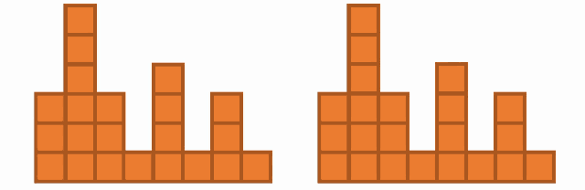
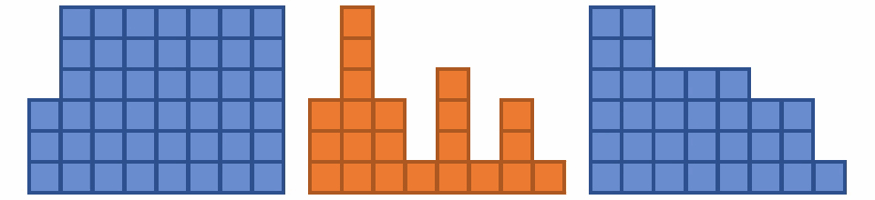

「積み木の水槽」問題の Haskell での回答を読み解く
今朝，バイト先で「積み木の水槽」問題の Haskell での回答について話題になりました． リンク先の解答を見ると，恐ろしいことに，一行で書けてしまいます(正しくは，この解答では nabetani さんの問題は解けませんが…)．
-- 2 == solve [1,5,3,7,2]
solve = sum . filter (> 0) . (zipWith (-) =<< (zipWith min . scanl1 max <*> scanr1 max))普通の Haskeller であれば，これぐらい目コンパイルして振る舞いを読み解くのは朝飯前でしょうが，Haskell 初学者のために簡単な解説を残しておこうかなと思います．
手直し
前述したとおり，そもそもこれでは nabetani さんの問題は解けないので，解けるように手直しします． もちろん 1行で ．
Data.List と Data.Bool を import してる前提だが，一応一行で書けた． 雑に直したのでもう少し短くできるような気もしますが，まぁそもそも本質的なところでないので勘弁してください．
ちなみに，そもそもなんで元のコードでは解けないのかというと，nabetani さんの問題には 0 が含むからだ． しかし，0 で水槽を切り分けてあげて，元の解答を map してあげれば良いだけなのでコアのところはそのまんま(filter (> 0) は要らない気がしたので消したけど)．
読み解く
手直しした最終的なコードはテストコードと共にココにあげた．
トップダウンに
順に読み解く． Haskell でプログラミングするとき(というか関数型プログラミング)はトップダウンに書いていくのが基本なので，読み解くときも上から順に切り分けてく．
solve :: String -> Int
solve = sum . fmap countWater . splitTank
splitTank :: String -> [String]
splitTank = words . fmap (bool ' ' <*> (/=) '0')
countWater :: String -> Int
countWater = sum . (zipWith (-) =<< (zipWith min . scanl1 max <*> scanr1 max)) . fmap (read . (: []))splitTank 関数は 0 を区切り文字として文字列を切り分けてるだけだ． 悲しいことに，Haskell (というか GHC)の標準モジュールには「任意の文字で文字列を切り分ける」関数がない． なので，0 だけを空白 ' ' に置換してから，words で切り分けている(空白で切り分ける関数 words は何故か標準にある)．
countWater 関数が各水槽の水の数を数え上げており，それを最後に総和 sum しているだけだ．
fmap はわかるよね？
ちなみに，さっきから出てきている fmap という関数はわかりますよね？ 多くの言語でも導入されている，リストや配列の各要素に関数を適用する関数(あるいはメソッド) map :: (a -> b) -> [a] -> [b] をより一般化したものだ． 今回はリストにしか使わないので map と同義だと考えてくれていい(hlint で注意されるので，fmap と書く癖がついた)．
コアの部分
さて，本題でもある countWater 関数を読み解く． まずは切り分けよう．
countWater :: String -> Int
countWater = sum . toWaterLine . toInts
toInts :: String -> [Int]
toInts = fmap (read . (: []))
toWaterLine :: [Int] -> [Int]
toWaterLine = zipWith (-) =<< (zipWith min . scanl1 max <*> scanr1 max)toInts 関数は数列の文字列から数値のリストに変換している． Haskell で文字列を任意の型に変換するには read :: String -> a 関数を使う． Haskell において String = [Char] なので，fmap (: []) をして String のリストに変換し，各文字列を read をしているというわけだ(singleton みたいな関数が標準にあればいいのに)．
toWaterLine 関数が水槽の各列の水の量を計算し，sum で総和している． なので，重要なのは toWaterLine 関数だ． (<*>) 演算子や (=<<) 演算子などがあって意味不明かもしれないが，この辺りはポイントフリーにするためのツールみたいなもので，アルゴリズムの本質的な部分ではないよ．
関数も Monad 型クラスのインスタンス
(<*>) 演算子や (=<<) 演算子が何をしているかと言うのは 関数型 (->) a も Monad 型クラスのインスタンス だという事実を知っていれば簡単に読めますね． Haskell 界隈では常識(要出典)なので，説明しなくても良いかもしれないが，初学者のために念のためしておく．
それぞれの演算子の型は以下の通り(めんどいので Monad で統一)．
で，前述したとおり，関数型 (c ->) も Monad 型クラスのインスタンスなので，m = (c ->) と置き換えれる．
便利そうなコンビネーターになった． なので，toWaterLine 関数のこれらの演算子を同様のラムダ式で置き換えてあげよう．
toWaterLine :: [Int] -> [Int]
toWaterLine
= \xs -> zipWith (-) ((\ys -> (zipWith min . scanl1 max $ ys) (scanr1 max ys)) xs) xs
= \xs -> zipWith (-) ((\ys -> zipWith min (scanl1 max ys) (scanr1 max ys)) xs) xs
= \xs -> zipWith (-) (zipWith min (scanl1 max xs) (scanr1 max xs)) xsついでに，他の言語の人では分かりにくい演算子も置き換えたので，これでどの言語の人でも読めるはずだ．
アルゴリズム
ここからは Haskell 関係ない． ひとつひとつ見ていこう．
scanl :: (b -> a -> b) -> b -> [a] -> [b] 関数は左畳み込み関数 foldl :: (b -> a -> b) -> b -> [a] -> b の途中経過もリストで残したような関数だ． つまり foldl f x xs = last $ scanl f x xs が成り立つ． scanl1 :: (a -> a -> a) -> [a] -> [a] 関数は初期値を無くしたバージョンだ． scanr1 は scanl1 の右畳み込みバージョン．
scanl max xs は左から順に，水槽の高さを比較して高い方を残しているので，各列の最も高い左側が残る． scanr1 max xs は各列の最も高い右側が残る．

そして，それらの低い方を残して，もとの高さを引く．

すごいできた！
試しに
次のテストコードを走らせてみた．
-- WalterTowers.hs
main :: IO ()
main = print $ all ((==) <$> snd <*> (show . solve . fst)) testSet
solve = ...
testSet :: [(String, String)]
testSet =
[ ("83141310145169154671122", "24")
, ("923111128", "45")
, ("923101128", "1")
, ("903111128", "9")
, ("3", "0")
, ("31", "0")
, ("412", "1")
, ("3124", "3")
, ("11111", "0")
, ("222111", "0")
, ("335544", "0")
, ("1223455321", "0")
, ("000", "0")
, ("000100020003121", "1")
, ("1213141516171819181716151413121", "56")
, ("712131415161718191817161514131216", "117")
, ("712131405161718191817161514031216", "64")
, ("03205301204342100", "1")
, ("0912830485711120342", "18")
, ("1113241120998943327631001", "20")
, ("7688167781598943035023813337019904732", "41")
, ("2032075902729233234129146823006063388", "79")
, ("8323636570846582397534533", "44")
, ("2142555257761672319599209190604843", "41")
, ("06424633785085474133925235", "51")
, ("503144400846933212134", "21")
, ("1204706243676306476295999864", "21")
, ("050527640248767717738306306596466224", "29")
, ("5926294098216193922825", "65")
, ("655589141599534035", "29")
, ("7411279689677738", "34")
, ("268131111165754619136819109839402", "102")
]stack runghc で走らせると．
$ stack runghc WalterTowers.hs
Trueおしまい
こういうのを自分で思いつけるようになりたいね…